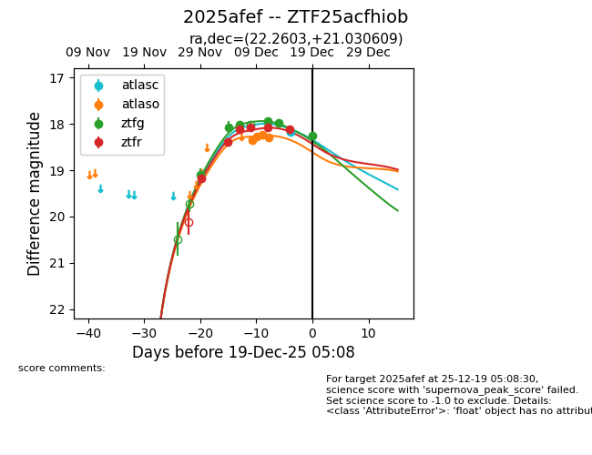
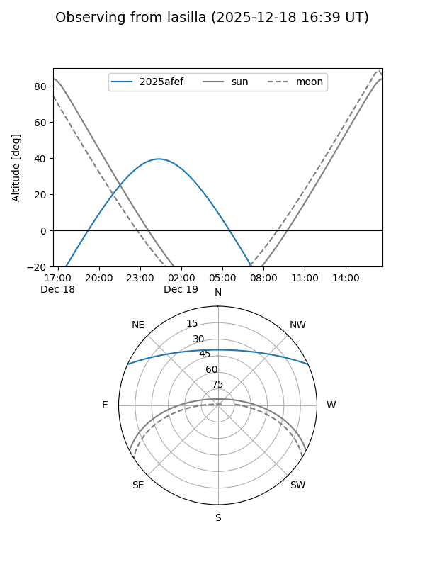
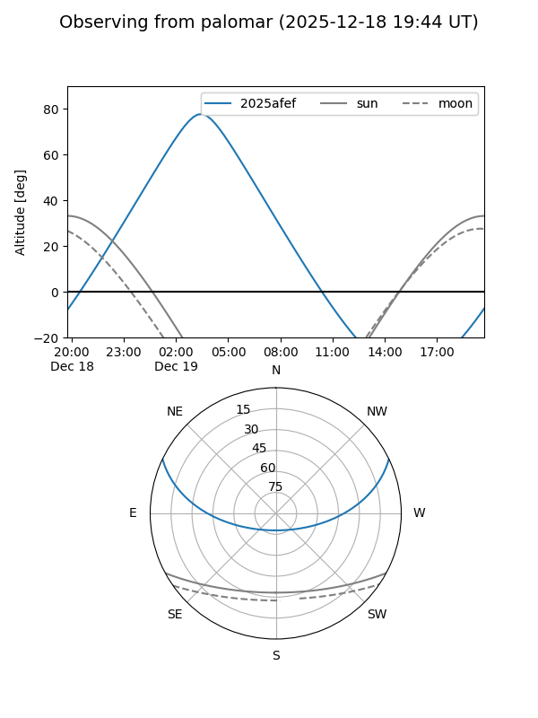
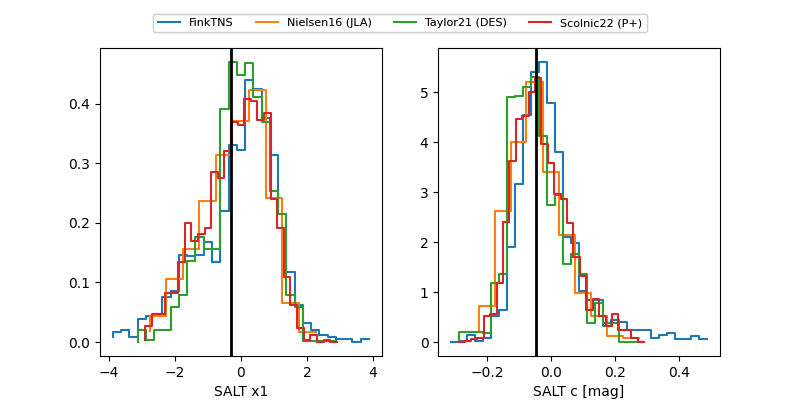

2025afef
Target 2025afef at 2025-12-19 05:11
Aliases and brokers:
FINK: fink-portal.org/ZTF25acfhiob
Lasair: lasair-ztf.lsst.ac.uk/objects/ZTF25acfhiob
ALeRCE: alerce.online/object/ZTF25acfhiob
TNS: wis-tns.org/object/2025afef
YSE: ziggy.ucolick.org/yse/transient_detail/2025afef
alt names
ZTF25acfhiob (ztf,fink_ztf)
2025afef (tns,yse)
Coordinates:
equatorial (ra, dec) = 22.2603,+21.03061
equatorial (HMS+DMS) = 01:29:02.47,+21:01:50.19
galactic (l, b) = (134.5845,-40.98877)
Flags:
Photometry:
last atlasc=18.16, atlaso=18.29, ztfg=18.26, ztfr=18.12
1 atlasc, 4 atlaso, 6 ztfg, 6 ztfr detections
Lightcurve

Visibility


Additional plots
